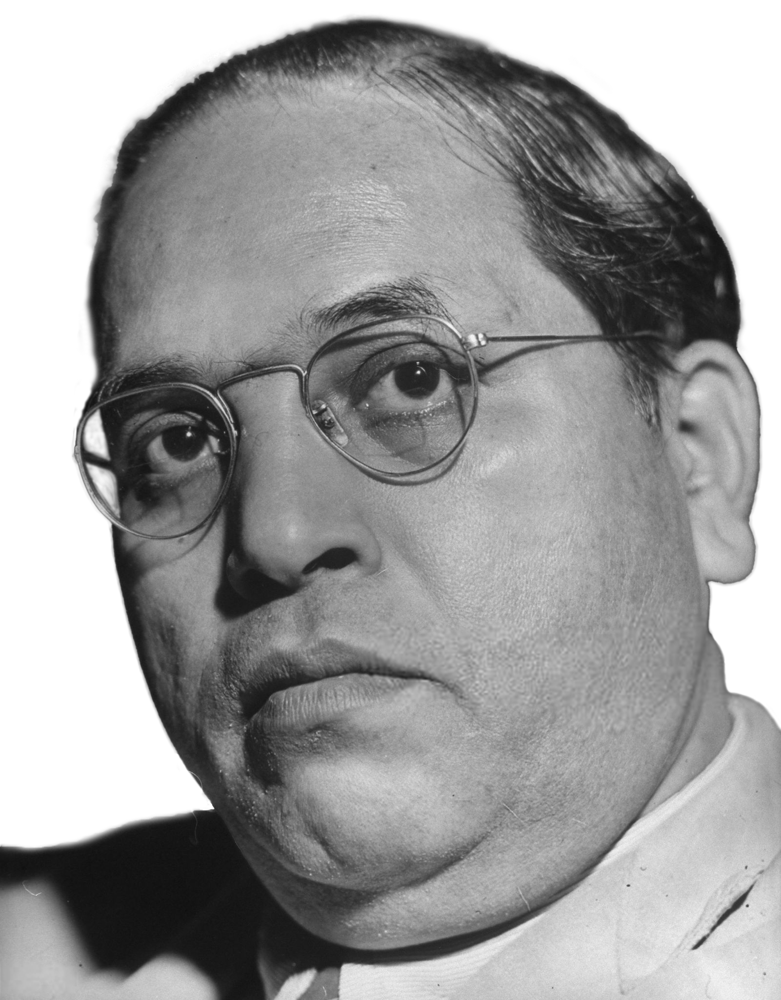

DR. BHIMRAO RAMJI AMBEDKAR

- Born: April 14, 1891, Mhow, India.
- Died: December 6, 1956, New Delhi (aged 65).
- Role In: Poona Pact.
- Baba Saheb Dr. Bhim Rao Ambedkar was born on April 14, 1891, he was the 14th and last child of his parents.
- Dr. Babasaheb Ambedkar was the son of Subedar Ramji Maloji Sakpal. He was Subedar in British Army. Babasaheb’s father was a follower of Sant Kabir and was also a well-read person.
- Dr. Bhimrao Ramji Ambedkar was hardly two years old when his father retired from service. His mother died when he was only about six. Babasaheb got his early education in Bombay. Since his school days he realized with intense shock what it was to be an untouchable in India.
- Dr. Ambedkar completed his graduation at Elphinston College, Bombay, for which he was getting a scholarship from His Highness Sayajirao Gaikwad of Baroda. After his graduation, he had to join Baroda Sansthan according to the bond. He lost his father when he was in Baroda, 1913 is the year when Dr. Ambedkar was selected as a scholar to go to U.S.A, for the higher studies. This was the turning point of his educational career.
- He got his M.A. and Ph.D. degrees from Columbia University in 1915 and 1916 respectively. He then left for London for further studies. He was admitted there to the Gray’s Inn for Law and also allowed to prepare for the D. Sc. at the London School of Economics and Political Science. But he was called back to India by the Dewan of Baroda. Later, he got his Bar-at-Law and D.Sc. degree also. He studied for some time at Bonn University in Germany.
- In 1916 he read an essay on ‘Castes in India — their Mechanism, Genesis, and Development’. In 1916, he wrote his thesis ‘National dividend for India — A Historic and Analytical Study’ and got his Ph.D. Degree. This was published after eight years under the title — “Evolution of Provincial Finance in British India.” Then after getting this highest degree, he returned to India and was appointed a Military Secretary to the Maharaja of Baroda with a view to groom him as the finance minister in the long run.
- Dr. Ambedkar returned to Bombay and joined Sydenham College as a Professor of Political Economy. As he was well read, he was very popular among the students. But he resigned his post, to resume his studies in Law and Economics in London. Maharaja of Kolhapur gave him the financial help. In 1921, he wrote his thesis. “Provincial Decentralization of Imperial Finance in British India,’ and got his M.Sc. Degree from the London University. Then he spent some period in Bonn University in Germany. In 1923, he submitted his thesis — “Problem of Rupee its Origin and Solution”, for the D.Sc. Degree. He was called to Bar in 1923.
- After coming back from England in 1924 he started an Association for the welfare of the depressed classes, with Sir Chimanlal Setalvad as the President and Dr. Ambedkar as the Chairman. To spread education, improve economic conditions and represent the grievances of depressed classes were the immediate objects of the Association.
- In 1928, he became a Professor in Government Law College, Bombay and on June 1,1935 he became the Principal of the same college and remained in that position till his resignation in 1938.
- Dr. B.R. Ambedkar’s death anniversary is observed as Mahaparinirvan Diwas across the country.